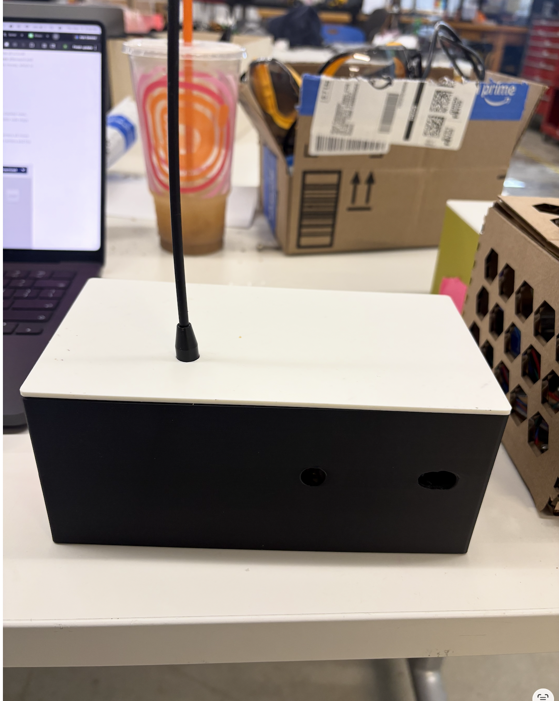
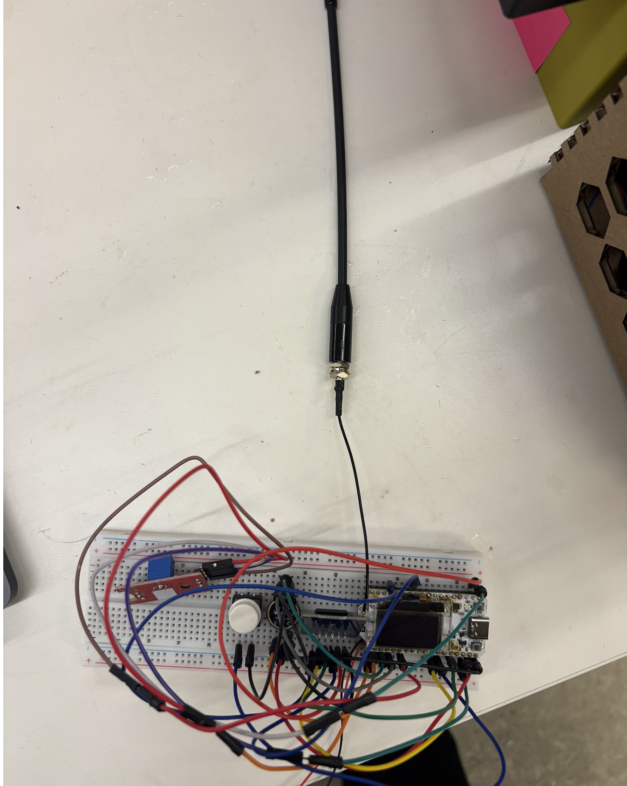
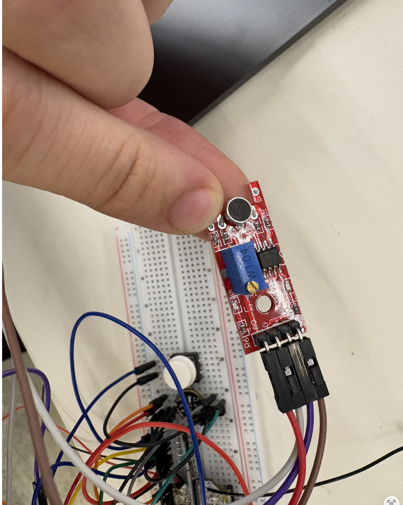

Week 9 // Networking
Long-range, sound-triggered audio recorder over LoRa
For the networking assignment I wanted to skip WiFi entirely and use LoRa radio. The idea: a battery-friendly node that sleeps until it hears a loud sound, records ~10 seconds of audio, and beams the recording over the air to a base station that writes it out as a .wav on my laptop.
Two ESP32 boards (Heltec WiFi LoRa 32 V3, with an SX1262 radio onboard), one sound sensor, one I2S microphone, one microSD card, and a Python script.

The System

Demo
Sender
The sender (sender.ino) spends almost all of its life in deep sleep. The HW-484's digital output is wired to a wakeup-capable GPIO, configured as an ext0 wakeup source on a HIGH edge. When the room gets loud enough to cross the HW-484's threshold (set by a potentiometer on the module), the ESP32 boots.
On wake it:
- Opens the I2S microphone at 16 kHz, 32-bit samples, mono.
- Records 10 s into a buffer, shifting the 32-bit word back down to 16-bit.
- Compresses every two samples into one byte using IMA ADPCM (4 bits per sample, ~4:1 compression). This matters because raw 16 kHz / 16-bit PCM is 32 KB/s — way too much to push over LoRa in a reasonable time.
- Writes the compressed audio to
/hq<n>.adpcmon the SD card. - Initializes the SX1262 in FSK mode at 300 kbps with +22 dBm output, then streams the file out in 250-byte packets, sandwiched between a
START|filename|sizeheader (sent 10× for robustness) and anENDfooter (sent 5×). - Goes back to deep sleep.
Deep sleep and the wake-up path
The whole project only makes sense if the node can sit untouched for days on a small battery. Active recording + transmit pulls 100s of mA, but the ESP32-S3's deep-sleep current is in the tens of µA — so the trick is to stay asleep almost always and only wake when something interesting happens.
I use ESP-IDF's ext0 wakeup source, which arms a single RTC-capable GPIO as a level-sensitive trigger. The HW-484 sensor's digital output is wired to GPIO 2 (an RTC GPIO on the S3, required for ext0) and the threshold pot on the module is tuned so quiet rooms read LOW and loud noises pull it HIGH. When that line goes HIGH, the chip boots from reset.
Tuning the HW-484's threshold pot turned out to be a project of its own — I had to turn the little screw on top more than 30 full rotations before the digital output started doing anything useful. The pot is a multi-turn trimmer, so each rotation only nudges the threshold a tiny amount, and from a fresh module it's nowhere near the audio range you actually care about. If you ever pick one of these up and it seems "dead," it's probably just miles away from its trip point.

void enterDeepSleep() {
Serial.flush();
delay(100);
esp_sleep_enable_ext0_wakeup((gpio_num_t)HW484_DO, 1); // wake on HIGH
esp_deep_sleep_start();
}A few details from the code worth pointing out:
- RTC-capable GPIO.
ext0only works on RTC-capable GPIOs, so the HW-484's digital output is wired toGPIO 2. INPUT_PULLDOWNon the wakeup pin. The pin is configured with an internal pulldown so the line has a defined state when the sensor isn't actively driving it.RTC_DATA_ATTRfor state across cycles.bootCountlives in RTC slow memory and survives deep sleep, so the firmware can tell on each boot whether it's a fresh power-on or a sound-triggered wakeup.- Cooldown. After transmitting, the firmware waits
COOLDOWN_SEC(10 s) before going back to sleep, so the next wakeup isn't fired by the tail end of the same noise event.
On first boot (power-on rather than sound-triggered) the firmware opens a 5-second window where pressing the user button forces a manual recording. After that window expires it drops into the same deep-sleep state.
SD card adapter and SPI wiring
The SD card lives on a standard microSD breakout, wired to the ESP32-S3's second SPI peripheral, HSPI. The firmware instantiates a dedicated SPIClass(HSPI) rather than using the default SPI object, and passes that custom bus into SD.begin().
The four signal pins and the bus:
SPIClass sdSPI(HSPI);
// in setup():
sdSPI.begin(SD_SCK_PIN, SD_MISO_PIN, SD_MOSI_PIN, SD_CS_PIN);
if (!SD.begin(SD_CS_PIN, sdSPI)) Serial.println("SD Failed");
Using a separate SPIClass instance keeps the SD bus independent of any other SPI device on the board — useful because the Heltec V3 already has the SX1262 radio wired to its own dedicated SPI pins, and mixing the two on one bus would force a lower shared clock rate.
Writing audio to the card

The recording loop is a small pipeline: I2S DMA fills a 1024-sample buffer at the hardware level, my code drains that buffer, converts 32-bit samples to 16-bit, runs them through the ADPCM encoder, and writes the resulting nibbles to the file. The file is opened once at the start of the clip and closed at the end — I deliberately don't flush() mid-recording because each flush burns several ms and would stall I2S.
Filenames are chosen by scanning for the next unused index (/hq1.adpcm, /hq2.adpcm, …) so a clip is never overwritten. The first four bytes of every file are the ADPCM "starter state" — the initial predicted value and the initial step index — so a decoder doesn't need to start from zero.
// Pick an unused filename
while (SD.exists("/hq" + String(fileIndex) + ".adpcm")) fileIndex++;
sprintf(filename, "/hq%d.adpcm", fileIndex);
file = SD.open(filename, FILE_WRITE);
// 4-byte header: starter predicted sample + step index + padding
file.write((uint8_t*)&adpcmPredicted, 2);
file.write((uint8_t*)&adpcmIndex, 1);
file.write((uint8_t)0);
uint8_t adpcmBuffer[BUFFER_SAMPLES / 2]; // 4-bit samples, 2 per byte
while (samplesSaved < totalSamplesNeeded) {
i2s_read(I2S_NUM_0, (void*)i2sBuffer, sizeof(i2sBuffer), &bytesRead, portMAX_DELAY);
int samplesCount = bytesRead / 4;
// 32-bit I2S word -> 16-bit PCM
for (int i = 0; i < samplesCount; i++)
outBuffer[i] = (int16_t)(i2sBuffer[i] >> 14);
// Pack two 4-bit ADPCM samples per byte
int adpcmCount = 0;
for (int i = 0; i < samplesCount; i += 2) {
uint8_t n1 = encodeIMA(outBuffer[i]);
uint8_t n2 = (i + 1 < samplesCount) ? encodeIMA(outBuffer[i + 1]) : 0;
adpcmBuffer[adpcmCount++] = (n2 << 4) | n1;
}
file.write(adpcmBuffer, adpcmCount);
samplesSaved += samplesCount;
}
file.close();A few details from the code:
- Globals for the working buffers.
i2sBuffer(int32_t[1024], 4 KB) andoutBuffer(int16_t[1024], 2 KB) are declared at file scope rather than on the stack insiderecordAudio(). The block comment in the code calls this out as a way to avoid stack overflow. - One open, one close. The file is opened once at the top of
recordAudio()and closed at the bottom — no per-chunkflush()calls — so the SD library can batch writes internally. - Two ADPCM samples packed per byte.
BUFFER_SAMPLES / 2output bytes are produced for each I2S buffer, with the second nibble shifted into the high half:(n2 << 4) | n1. - Sample count tracked explicitly. The loop runs until
samplesSaved >= SAMPLE_RATE * RECORD_TIMErather than until a wall-clock timer expires, so the resulting file always contains the right number of audio samples even if a single I2S read returns short.
Why FSK and not LoRa-CSS?
The SX1262 is famous for chirp-spread-spectrum (CSS) modulation — what people usually mean by "LoRa." That mode tops out around ~20 kbps, and at that rate a ten-second voice clip takes minutes. The same chip also supports plain FSK, which trades range for speed: 300 kbps is enough to push the compressed clip across the room (and through a wall) in seconds.
// FSK init — fast, not long-range
if (radio.beginFSK(915.0, 300.0, 150.0, 467.0) == RADIOLIB_ERR_NONE) {
radio.setOutputPower(22); // +22 dBm
radio.setDataShaping(RADIOLIB_SHAPING_0_5);
radio.setSyncWord((uint8_t[]){0xA5, 0xA5}, 2);
}
// header (10x) -> 250-byte chunks -> END (5x)
String header = "START|" + String(filename) + "|" + String(file.size());
for (int i = 0; i < 10; i++) { radio.transmit(header); delay(200); }
uint8_t txBuffer[250];
while (file.available()) {
int n = file.read(txBuffer, 250);
radio.transmit(txBuffer, n);
delay(6);
}
for (int i = 0; i < 5; i++) { radio.transmit("END"); delay(50); }
Custom ADPCM encoder
I didn't want to pull in a heavy library, so the sender contains a small IMA ADPCM encoder using the standard step table and index update rules. The encoder state (adpcmPredicted, adpcmIndex) is written into a 4-byte header at the top of each .adpcm file so a desktop decoder can reconstruct it.
uint8_t encodeIMA(int16_t sample) {
int16_t step = stepTable[adpcmIndex];
int16_t diff = sample - adpcmPredicted;
int16_t value = 0;
if (diff < 0) { value = 8; diff = -diff; }
int16_t vpdiff = (step >> 3);
if (diff >= step) { value |= 4; diff -= step; vpdiff += step; }
step >>= 1;
if (diff >= step) { value |= 2; diff -= step; vpdiff += step; }
step >>= 1;
if (diff >= step) { value |= 1; vpdiff += step; }
adpcmPredicted += (value & 8) ? -vpdiff : vpdiff;
if (adpcmPredicted > 32767) adpcmPredicted = 32767;
if (adpcmPredicted < -32768) adpcmPredicted = -32768;
adpcmIndex += indexTable[value];
if (adpcmIndex < 0) adpcmIndex = 0;
if (adpcmIndex > 88) adpcmIndex = 88;
return value & 0x0F;
}Receiver
The receiver (receiver.ino) does very little on its own. It sits in radio.receive(...), parses each packet, and re-emits the bytes over USB serial at 921 600 baud — the highest stable rate I could get out of the ESP32-S3 USB-CDC — as ASCII hex:
### START_OF_FILE ###
MSG: Signal - RSSI: -42.50 dBm, SNR: 9.25 dB
DATA:a3f1009c...
DATA:...
### END_OF_FILE ###It also prints a one-line throughput / RSSI status every second so I can watch the signal drift as I walk around with the sender.
I made it deliberately dumb: no buffering, no reassembly, no decoding. All of that lives on the laptop, so I can iterate on the file format without re-flashing the ESP32.
Host
main.py opens the serial port, looks for the ### START_OF_FILE ### / ### END_OF_FILE ### markers, hex-decodes the DATA: lines in between, and writes the result as a WAV at 16 kHz, mono, 8-bit.
import serial, binascii, wave
OUTPUT_FILE = "hq_audio.wav"
BAUD_RATE = 921600
SAMPLE_RATE = 16000
def save_audio(filename, data_bytes):
with wave.open(filename, 'wb') as wav_file:
wav_file.setnchannels(1)
wav_file.setsampwidth(1)
wav_file.setframerate(SAMPLE_RATE)
wav_file.writeframes(data_bytes)
def main():
ser = serial.Serial("/dev/cu.usbserial-0001", BAUD_RATE, timeout=1)
audio_data = bytearray()
recording = False
while True:
line = ser.readline().decode('utf-8', errors='ignore').strip()
if not line:
continue
if "### START_OF_FILE ###" in line:
audio_data = bytearray()
recording = True
elif "### END_OF_FILE ###" in line:
save_audio(OUTPUT_FILE, audio_data)
recording = False
elif line.startswith("DATA:") and recording:
chunk = binascii.unhexlify(line.split(":")[1])
audio_data.extend(chunk)What Worked, What Didn't
Worked
- Sound-triggered deep-sleep is rock solid. Boot from a HIGH edge on the HW-484 takes under 300 ms — fast enough to catch the tail of whatever sound woke it up.
- FSK at 300 kbps is the right call here. A 10 s ADPCM clip is ~20 KB; that crosses the link in a few seconds.
- Sending the START header 10× and the END footer 5× is crude but effective — a single dropped header packet doesn't kill the whole transfer.
Didn't, at first
- I originally used LoRa-CSS modulation (the actual chirp-spread-spectrum mode the SX1262 is named for). It was incredibly slow — pushing a ten-second clip took far longer than was practical. Switching the same chip into FSK mode was the unlock; that's why
radio.beginFSK(...)is what you see in the firmware today rather thanradio.begin(...). - Initial recordings sounded like a chainsaw. The cause turned out to be a dual-channel bug in the I2S configuration: the encoder was being fed stereo-interleaved data while treating it as mono, which mangled the ADPCM predictor and produced the buzzing sound. The fix is the
I2S_CHANNEL_FMT_ONLY_LEFTline in the currenti2s_config— it forces the driver to deliver a single mono channel.
What I'd Do Next
- Add a CRC or rolling sequence number per packet so the laptop can detect (and request retransmits of) dropped chunks. Right now a lost data packet shows up as an audible click.
- Decode ADPCM on the laptop instead of writing the raw nibbles into a WAV header that claims to be 8-bit PCM. The audio is recognizable today but distorted; a proper decoder would clean it up.
- Move to two-way comms so the receiver can ACK and the sender can tighten the inter-packet
delay().
Files
| File | Role |
|---|---|
| sender.ino | Heltec V3 firmware — sound wakeup, I2S record, ADPCM, FSK transmit |
| receiver.ino | Heltec V3 firmware — FSK receive, hex over USB |
| main.py | Host script — serial → WAV |
Full Source
All three files inline. Click a tab to switch.